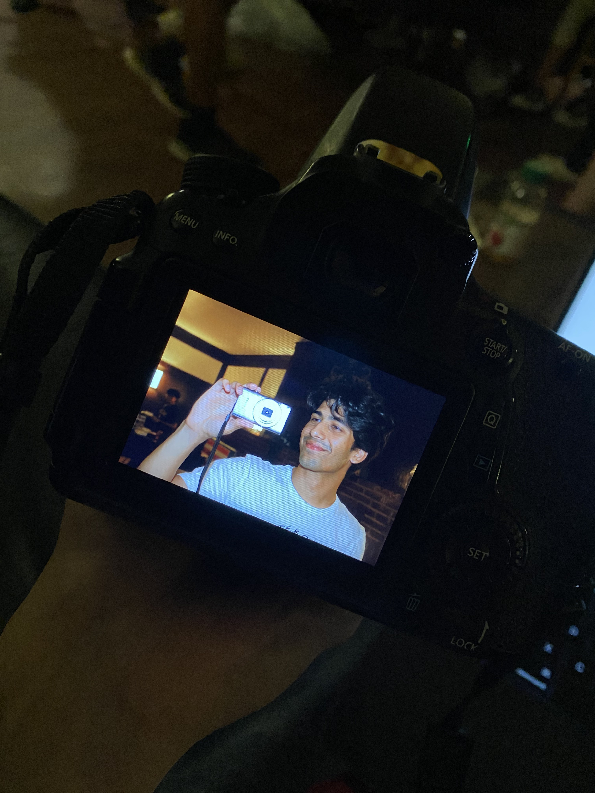
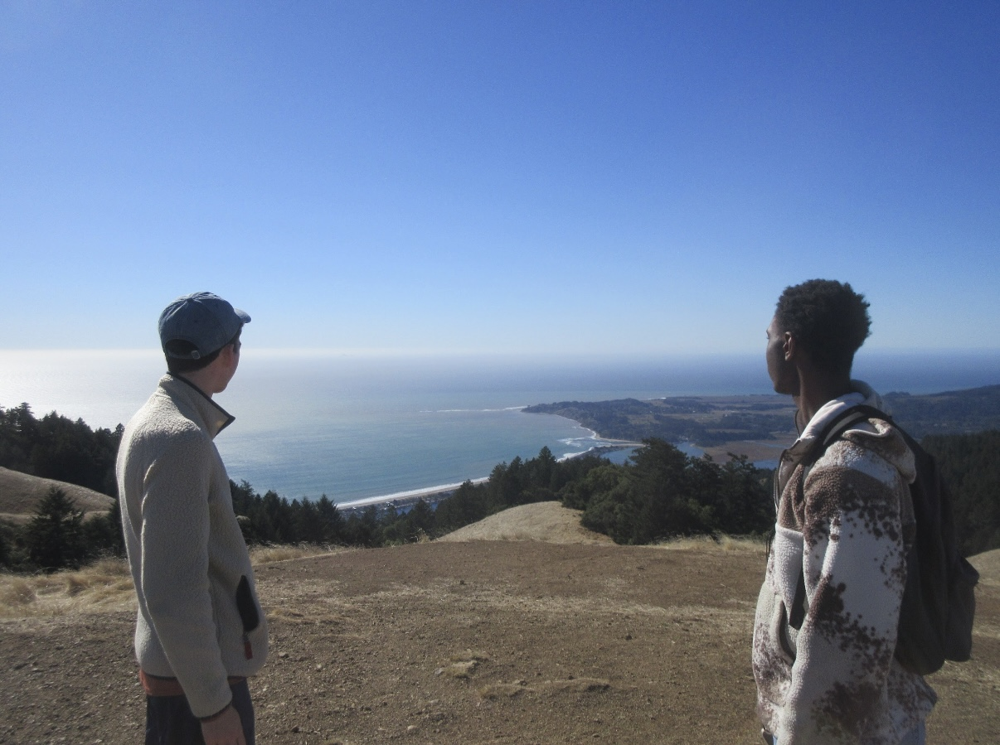

Representation Notes
Fragments on institutions, voice, legitimacy, and the strange texture of public trust.
design projects & political science papers — arranged as a loose working table.
Fragments on institutions, voice, legitimacy, and the strange texture of public trust.

A speculative dashboard for mapping constituent needs without flattening them into metrics.
Stanford Political Review.

Small rules for keeping unfinished work visible without pretending it is complete.